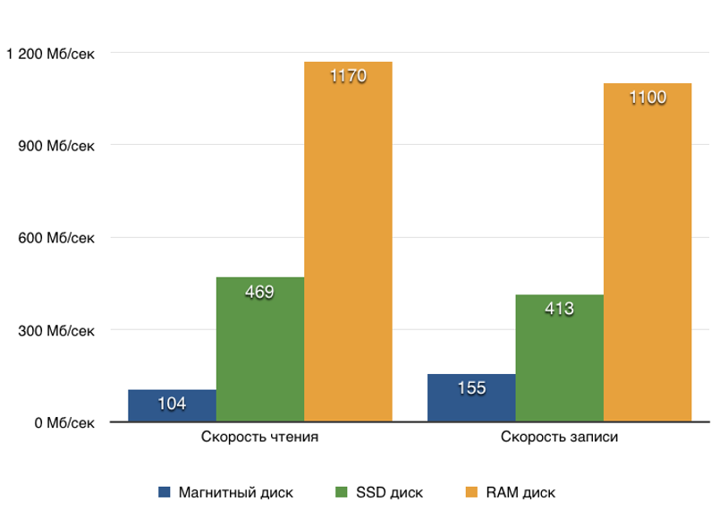
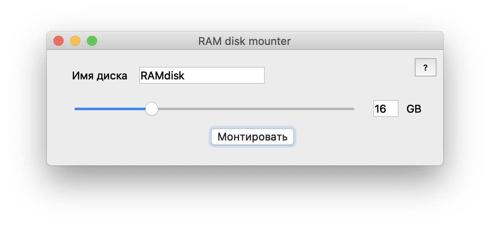

Быстродействие и надежность
Скорость чтения/записи RAM гораздо выше обычного жесткого диска. Для этого типа памяти совершенно не принципиально количество циклов перезаписи информации по сравнению с SSD накопителями, что делает виртуальный RAM диск идеальным решением для задач, где необходима максимальная скорость доступа к данным без ущерба для жесткого диска.

Безопасность
RAM диск как и информация на нем, живут до первой перезагрузки, выключения, извлечения, поэтому не забудьте скопировать нужную информацию перед завершением работы. Для удаления диска достаточно просто извлечь его, и никто и никогда не получит доступ к вашим секретам.
Системные требования
Версия для MacOS:
ОС: MacOS 10+
ОЗУ: от 1 GB
Скриншоты

Скачать

О разработке
GIThub: https://github.com/1mpseven/RAMDiskMounter
VK: https://vk.com/ramdiskmounter
Сайт: https://1mpseven.github.io/RAMDiskMounter/
Пожертвовать
В Группе VK: https://vk.com/ramdiskmounter